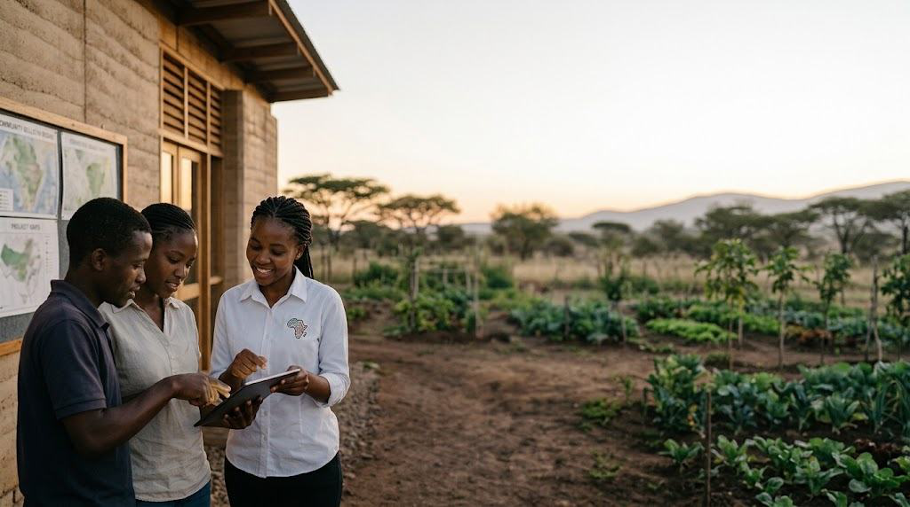

Invest directly in Africa's youth-led future
Equip young leaders with skills and resources to launch enterprises, create jobs, and build lasting economic independence across rural communities.
Choose an amount
100% of your gift is directed to AYM's approved programs and operations.
How would you like to pay?
Pick a method below — the button at the bottom updates to match your choice.
Secure payments processed by verified third-party providers. AYM never stores your full card details.
What your donation supports
Youth Employment
Job training and hands-on placements that lead to real work.
Youth Enterprises
Seed support for small, youth-led ventures that generate income.
Community Projects
Education, agriculture, health, and tech initiatives in rural communities.
Direct your gift to a focus area
Choose a program area to see exactly what your money funds — or let AYM put it where it is needed most.
What happens next
Instant confirmation
You’ll see a confirmation on screen the moment your gift goes through.
Your receipt
An emailed receipt with the amount, date, and AYM’s EIN for your records.
Impact updates
We follow up with news of the programs and youth your gift supports.
Gifts are processed by verified third-party payment providers. AYM does not store your card details.
Your gift is handled with care
AYM is committed to ethical stewardship and transparent reporting. We provide clear information on our leadership, finances, and programs so donors can see exactly how their support drives youth employment and community development.
AYM is a 501(C)(3) Nonprofit Organization.
EIN: 39-1742519. Donations are tax-deductible to the extent allowed by law.
Giving by cheque, stock or wire?
For gifts by cheque, wire transfer, appreciated stock, planned giving, or anything the buttons above don't cover, our team will set it up with you and send a tax receipt.
Talk to our team →Together we've built momentum
Figures pending final verification with AYM's finance team.
Frequently asked questions
Is my donation tax-deductible?
AYM is a U.S. 501(c)(3) nonprofit organization. Donations are generally tax-deductible to the extent allowed by law. Donors should retain their receipts and consult a tax adviser about their circumstances.
How will AYM use my donation?
Donations support approved programs, operations, and organizational needs connected to AYM's mission. Donors may select a program when available, or allow AYM to direct the gift where it is most needed.
Can I make a monthly gift?
Yes. Monthly donations provide reliable support and help AYM plan projects, training, and youth-enterprise activities more effectively.
Will I receive a receipt?
Donors who provide valid contact information should receive an electronic or written acknowledgement stating the amount, date, and whether goods or services were received in exchange.
Can I donate to a particular project?
Yes, when a designated option is available. AYM explains how it handles gifts when a project is completed, fully funded, postponed, or no longer feasible.
Can my employer match my donation?
Some employers match charitable contributions or volunteer hours. Search your employer's matching-gift system or contact your human-resources department.
Can I donate equipment or supplies?
AYM may accept approved gifts that meet a documented program need. Contact AYM before purchasing or shipping materials because transportation, customs, storage and distribution costs may exceed the item's value.
Is online giving secure?
Payments are processed through verified third-party services using encrypted connections. AYM does not collect or store complete card information directly on its website.
Can I donate anonymously?
Yes, where the payment system permits it. AYM may still need limited information to process the contribution and comply with legal or financial requirements.
Still have questions?
Can't find the answer you're looking for? Please chat to our friendly team.